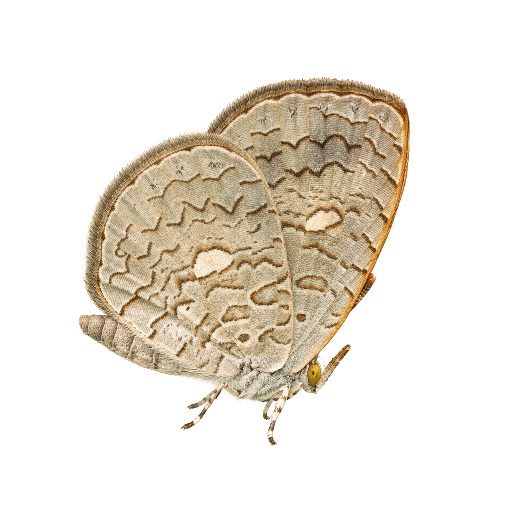

Lycaenidae · 051 / 165
Spalgis epius
Spalgis epius

বৈশিষ্ট্য ও শনাক্তকরণ
ছোট প্রজাতি; পূর্ণাঙ্গকে পাতায় বসতে দেখা যায়। শূককীট মাংসাশী হওয়া বিশেষ বৈশিষ্ট্য।
স্ত্রী ও পুরুষের পার্থক্য
স্থানীয় পর্যবেক্ষণে স্ত্রীর ডানা বেশি গোল ও নিচের রঙ হালকা বলে উল্লেখ আছে।
আকার
পর্যালোচিত সূত্রে পরিমাপপদ্ধতিসহ নির্ভরযোগ্য সংখ্যা নিশ্চিত হয়নি।
ওকিনাওয়ার দ্বীপে রেকর্ড
রেকর্ডকৃত দ্বীপের উদাহরণ: ইশিগাকি, ইরিওমোতে, ইয়োনাগুনি, হাতেরুমা। রেকর্ড বর্তমান প্রতিষ্ঠার নিশ্চয়তা নয়।
আবাসস্থল
মিলিবাগযুক্ত গাছ ও বনপ্রান্ত।
জীবনযাপন ও অতিরিক্ত তথ্য
সরকারি সংকলনে ইরিওমোতে ২০০২ সালের পর প্রজননের উল্লেখ আছে। শূককীট পাতা নয়, মিলিবাগ খায়।
শূককীট ও খাদ্য উদ্ভিদ
মিলিবাগ শিকার করে; সাধারণ পাতাখেকো খাদ্যগাছের তালিকা এখানে প্রযোজ্য নয়।
তথ্যসূত্র ও সহায়ক পাঠ
- 沖縄県外来種データベース2024
ডেটায় উল্লেখিত সূত্র দেখার তারিখ: 2026-11-10 - 沖縄蝶類生態図鑑：シロモンクロシジミ
ডেটায় উল্লেখিত সূত্র দেখার তারিখ: 2026-11-10
তথ্য সরবরাহকৃত ডেটার উপর ভিত্তি করে তৈরি (হালনাগাদ: ১০ নভেম্বর ২০২৬)। কোনো দ্বীপের রেকর্ড সেখানে বর্তমান স্থায়ী বসবাস বা সহজে দেখা পাওয়ার নিশ্চয়তা নয়। চিত্র নির্দেশক; শনাক্তকরণে বাস্তব নমুনা ও সূত্র মিলিয়ে দেখুন।